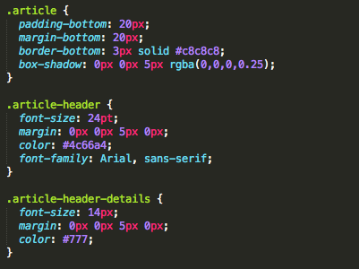

Well thought out css classes can not only speed up your development, but they can eliminate all kinds of confusion down the road. Looking at CSS in an "object oriented" sense might be a bit complicated at first, but after practicing the art of abstraction, things start to become second nature. I can't entirely speak from experience yet, but it's definitley a work in progress.
The image to  the left is an example about how you might want to think about structuring css classes. This is actually an early example of the very css that syles this blog post. Each blog post is considered an article, each article has a title and info, and each article has content. For each of these classes, we can define a new class that contains attributes that are only associated with that specific element. By writing "modular" classes, we can reuse them as needed for other places in our styling. For example, the image within this paragraph as particular attributes associated with in that one would commonly want to use for an image embedded in a piece of text. This allows yourself, or other developers, to use the "article-image" class for future development. This allows a team to work faster, stay organized, and increase overall efficiency.
Custom CSS Classes
April 23, 2014 - 12:53pm
<- General styling
<- Haeder details
<- Article Details
Structuring HTML Pages
April 22, 2014 - 12:53pm
Elaborate on the general structure that makes up an html page.
Using external CSS links
April 20, 2014 - 12:53pm
Describe how an external link is used to retrieve css stylesheets, or script links are used to retrieve javascript files.